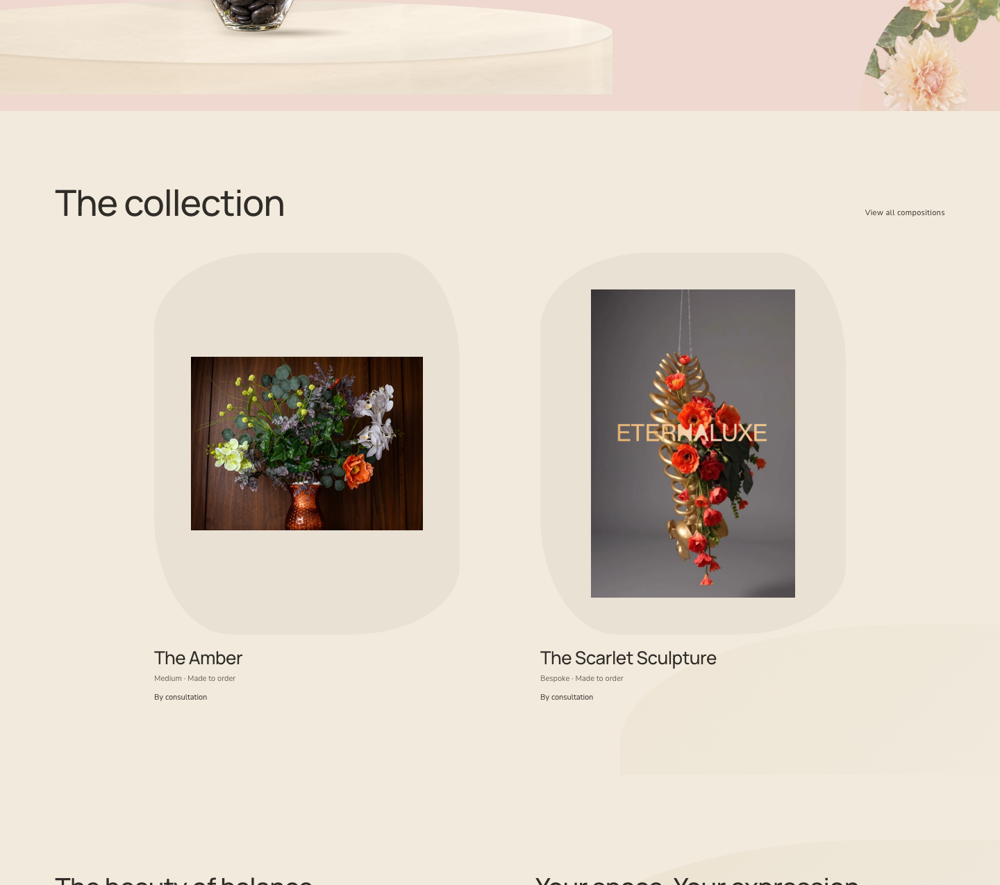
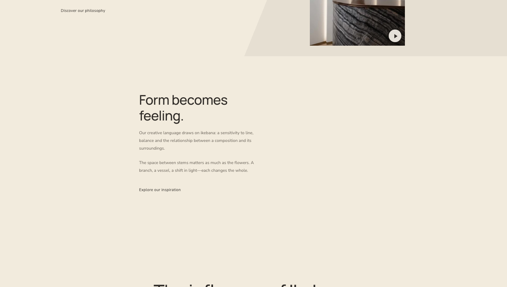
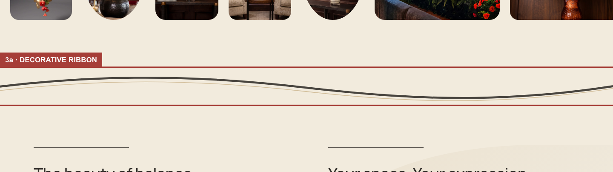
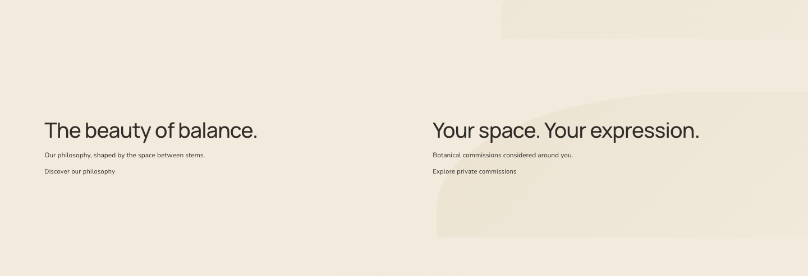

Eternaluxe · numbered removal review
Live site unchanged. Left image: marked current location. Right image: proposed result. Full-resolution pairs and every ribbon location are in the detailed review.
1. Home · moving slideshow
Below Selected Compositions, before the two discovery text blocks.
Only: The “Composed for your world.” heading, gallery introduction, eight moving photographs (and repeated animation copies), and pause control.


2. The House · moving floral gallery
After the opening film, before the philosophy section.
Only: The “A world in composition.” gallery heading, introduction, 19 gallery entries (16 photographs and 3 films, plus animation copies), and pause control.


3. Three black-and-champagne ribbons
Home: after the moving gallery. House: before philosophy and between philosophy and Ikebana.
Only: Only the three thin animated ribbon separators.


4. Home · two short rules
Above “The beauty of balance.” and “Your space. Your expression.”
Only: Only the two short horizontal rules marked 4.1 and 4.2.

5. CTA link underlines · sitewide
Representative locations marked 5.1 and 5.2; full route/label inventory below.
Only: The underline styling under CTA text links.